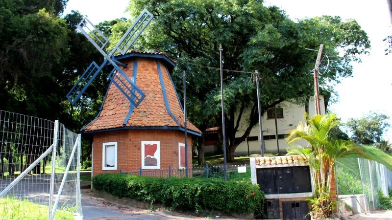
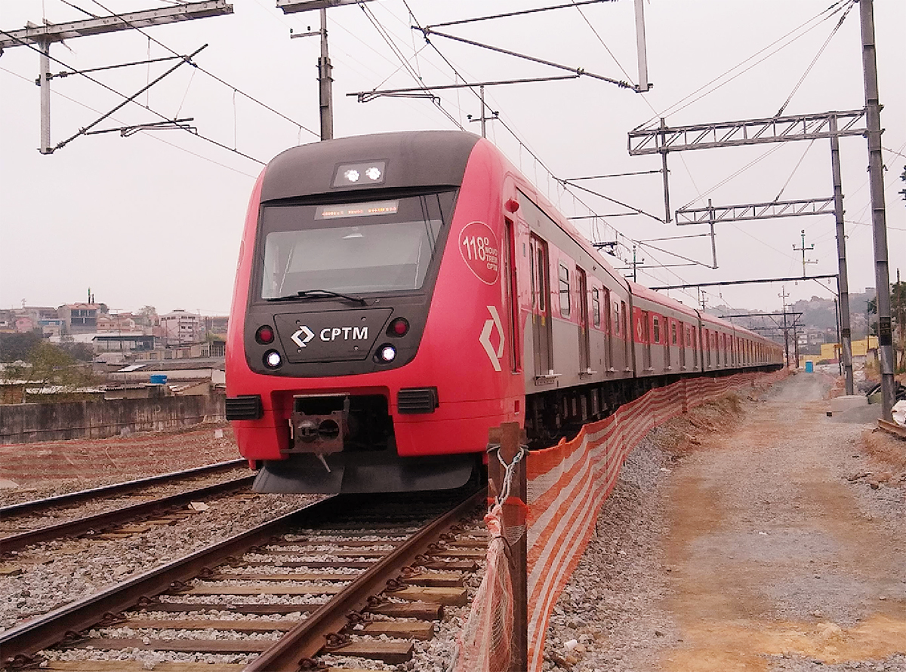

Pirituba nasceu a partir de uma fazenda adquirida pelo coronel Anastácio de Freitas, que veio a ser adquirida pelo brigadeiro Rafael Tobias de Aguiar e pela Marquesa de Santos. Em 1917, a fazenda foi adquirida pela Companhia Armour, e a área destinada à criação de gado de corte foi dada à Cia. City, que urbanizou esta região. Atualmente, é um dos polos industriais da cidade, com várias indústrias instaladas e residências diversas. Houve, ultimamente, um grande aumento de edifícios na região, além da retirada total das favelas e o deslocamento dessas populações para unidades construídas pela Companhia de Desenvolvimento Habitacional e Urbano do Estado de São Paulo em outros bairros.

Possui um dos clubes holandeses mais tradicionais de São Paulo, a Casa de Nassau e, no decorrer dos tempos, sofreu forte influência de colônias de ingleses, de russos e de italianos que vieram trabalhar nas indústrias da região no início do século XX.

O distrito também é cortado pela Linha Sete da Companhia Paulista de Trens Metropolitanos, antiga Estrada de Ferro Santos-Jundiaí. A estação Pirituba foi inaugurada em 1885 pela São Paulo Railway (também conhecida como "Ingleza"). Na época, muitos ingleses residiam na Chácara Inglesa. Em 1964, a estação passou por reformas que incluíram as construções de uma passarela e de mais uma plataforma, entregues em 1965. Além dos ingleses, as terras situadas ao redor da estação, na época de sua construção, receberam um considerável número de famílias italianas e portuguesas interessadas pela região, constituindo, assim, as primeiras famílias de Pirituba.
No passado, o bairro de Pirituba era conhecido por alguns paulistas da alta sociedade por abrigar em seu seio uma residência um tanto quanto famosa na cidade: a da amante do imperador Dom Pedro I. Tratava-se nada mais, nada menos, do que a casa da Dona Domitila de Castro do Canto e Mello, a Marquesa de Santos. O imóvel aonde viveu a marquesa, na atualidade, abriga o Museu da Cidade de São Paulo.
Contudo, os anos 50 foram os mais importantes sob a ótica do desenvolvimento do bairro. Alguns dos fatos históricos de grande importância neste período foram a ampliação considerável do Lanifício Pirituba, a fundação de fábricas como a de papel Rio Verde, a de lajes errana, a de preparo de algodão Norbo e a Pianofatura Paulista.